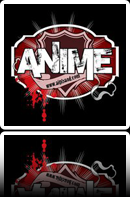

_aip band

Seguici
Storia
Le anime in plexiglass si sono formate nel settembre del 2002 e in una decina d'anni sono diventate una delle cover band di Ligabue più seguite ed importanti d'Italia. Capaci di attirare migliaia di fan ai loro concerti, riescono a riprodurre con maestria le sonorità originali del rocker emiliano, sia nei live all'aperto, che nelle serate più intime nei locali, che nei concerti acustici nei teatri del veneto. Collaborano con alcuni dei componenti originali della band del Liga, tra cui Mel Previte, Rigo Righetti, Robby Pellati e Max Cottafavi. Da ricordare infine la loro collaborazione con la Città della Speranza.